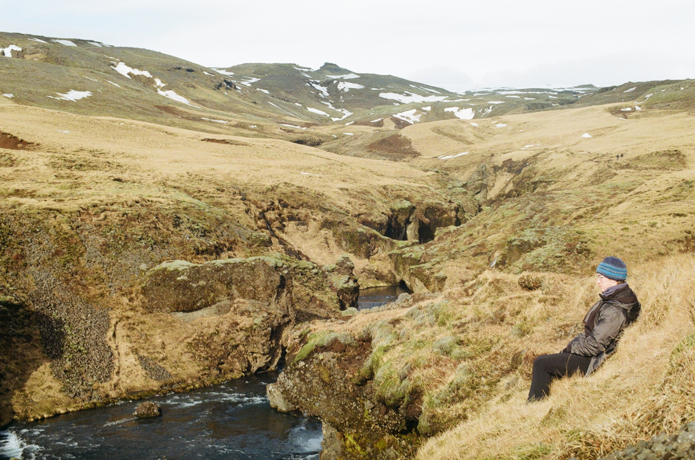

|
Aneesh Muppidi I'm a first-year Computer Science PhD student at Stanford, advised by Chelsea Finn. I am a Rhodes Scholar, and I previously completed my undergrad at Harvard. ▶︎ RhodesAt Oxford I completed an MSc by Research in Engineering Science as a Rhodes Scholar, co-advised by Jakob Foerster at FLAIR and João Henriques at VGG. My thesis work was on real-time reinforcement learning: how an agent should decide how long to think when the world does not wait for it. ▶︎ HarvardAt Harvard I completed a concurrent A.B. in Computer Science and Neuroscience and S.M. in Computer Science. I was advised by Hank Yang at the Computational Robotics Lab, Samuel Gershman at the Kempner Institute, where I was a KURE fellow, and Ila Fiete at MIT. I was President of the Harvard Computational Neuroscience Society and Harvard Dharma, and I wrote a column for the Harvard Crimson. I also like film photography. |
|
▶︎ RhodesAt Oxford I completed an MSc by Research in Engineering Science as a Rhodes Scholar, co-advised by Jakob Foerster at FLAIR and João Henriques at VGG. My thesis work was on real-time reinforcement learning: how an agent should decide how long to think when the world does not wait for it. ▶︎ HarvardAt Harvard I completed a concurrent A.B. in Computer Science and Neuroscience and S.M. in Computer Science. I was advised by Hank Yang at the Computational Robotics Lab, Samuel Gershman at the Kempner Institute, where I was a KURE fellow, and Ila Fiete at MIT. I was President of the Harvard Computational Neuroscience Society and Harvard Dharma, and I wrote a column for the Harvard Crimson. I also like film photography. |
|

Recent News
|
ResearchHighlighted entries are ones I led or co-led. * denotes equal contribution. Google Scholar |
|
Mulligan: Performance-Guided Data Collection for Efficient On-Robot Learning
Lars Ankile, Perry Dong, Rohan Bhowmik, Aneesh Muppidi, David D. Yuan, Shuran Song, Chelsea Finn arXiv 2026, under review at ICRA 2027 project page / arXiv Collect robot data where the policy fails, not where it already succeeds. |
|
|
Learning Fast Dynamic Imitation Online
John Hua Yao, Ajay Sridhar, Aneesh Muppidi, Jaden Clark, Lars Ankile, Zipeng Fu, Chelsea Finn ICRA 2027, under review paper Turn position-only demonstrations into fast, forceful robot actions with twenty minutes of real-world RL. |
|
|
Finding the Time to Think in Real-Time Reinforcement Learning
Aneesh Muppidi*, Firas Darwish*, Dylan Cope, João F. Henriques, Jakob N. Foerster NeurIPS 2026 project page / code / paper Run RL in real time, and choose how long to think. Planning agents like AlphaZero and MuZero can trade search depth for latency, and we show when they should. |
|
|
Predictive Scheduling for Efficient Inference-Time Reasoning in Large Language Models
Katrina Brown*, Aneesh Muppidi*, Rana Shahout ICML 2025 Workshop on Efficient Systems for Foundation Models (ES-FoMo III) project page / code / paper Train lightweight predictors to estimate how much reasoning a prompt needs before generation, then allocate tokens where they matter most. |
|
 |
A Parameter-Free Optimizer for Lifelong Reinforcement Learning
Aneesh Muppidi, Zhiyu Zhang, Heng Yang NeurIPS 2024; spotlight at the RLC 2024 and RSS 2024 workshops project page / code / arXiv Mitigate plasticity loss, accelerate forward transfer, and avoid policy collapse with one line of code. |
 |
Resampling-Free Particle Filters in High Dimensions
Akhilan Boopathy, Aneesh Muppidi, Peggy Yang, Abhiram Iyer, William Yue, Ila Fiete IEEE International Conference on Robotics and Automation (ICRA) 2024 arXiv Particle filters that scale to high-dimensional state spaces without resampling, applied to object and pose estimation. |
|
Variational Agent Discovery
Aneesh Muppidi, Wilka Carvalho, Samuel Gershman Harvard senior thesis, 2025; Best Undergraduate Poster, Kempner Institute project page / thesis How can we discover agents using only vision? |
Research Experience |
|
IRIS Lab, Stanford University
Advisor: Chelsea Finn PhD student, September 2026 – present |
|
|
FLAIR and VGG, University of Oxford
Advisors: Jakob Foerster and João Henriques Rhodes Scholar, MSc by Research, 2025 – 2026 |
|
|
Computational Robotics Lab, Harvard
Advisor: Heng Yang Undergraduate researcher, 2023 – 2025 |
|
|
Computational Cognitive Neuroscience Lab, Kempner Institute at Harvard
Advisor: Samuel Gershman KURE and KRANIUM Fellow, 2023 – 2025 |
|
|
Fiete Lab, MIT
Advisor: Ila Fiete Undergraduate researcher, 2023 – 2025 |
Course Projects |
More |
Open Source |
Policy Iteration via Search Distillation: policy iteration with Gumbel MuZero, distilled into a fast neural policy in JAX/XLA; beats PPO.
NNX-Control: high-performance JAX control environments with end-to-end PPO training in a single file. TRAC: the parameter-free optimizer from our NeurIPS 2024 paper, as a drop-in PyTorch optimizer. |
Awards |
United States Rhodes Scholarship, 2024
Elliot and Mary Perkins Prize, Lowell House, Harvard, 2025 Top Ten Seniors in Innovation, Harvard Technology Review, 2025 Best Undergraduate Poster, Kempner Institute Summer Symposium, 2024 KURE and KRANIUM Research Fellowships, Kempner Institute, 2024 Spotlight, RLC 2024 and RSS 2024 workshops Thrive Fellow, Stanford Vice Provost for Graduate Education, 2026 Pechet Prize Fellowship, Harvard, 2023 John Harvard Scholarship, Harvard Coca-Cola Scholar, 2021 |
Favorites |
||
 |
 |
 |
 |
 |
|
|
Modified from Jon Barron. |